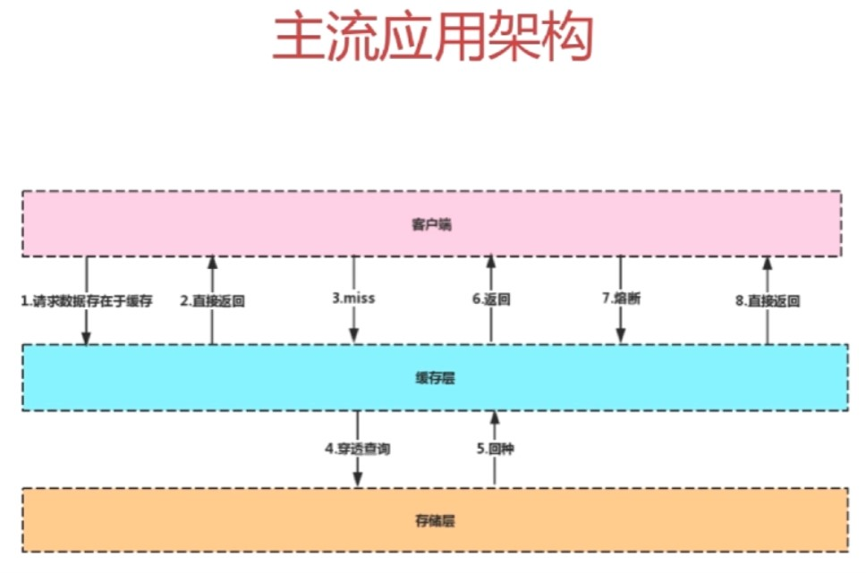

主流应用架构

-
穿透查询：请求数据的时候先到缓存层查询数据，当缓存层没有数据，在穿透到存储层查询
-
回种：穿透查询完成后再缓存到缓存区
-
熔断：当存储层挂了之后，会自动从缓存层获取并返回数据，无论有没有获取到数据都返回
缓存中间件——Memcache和Redis的区别
Memcache：代码层次类似Hash
优缺点：
- 支持简单数据类型
- 不支持数据持久化存储
- 不支持主从
- 不支持分片(把数据库打碎的过程，将大数据分布到各个物理节点上)
Redis
优缺点：
- 数据类型丰富
- 支持数据持久化存储
- 支持主从
- 支持分片(3.0版本后)
为什么Redis能这么快？
100000+QPS（QPS即query per second，每秒内查询次数）
-
完全基于内存，绝大部分请求时纯粹的内存操作，执行效率高
-
数据结构简单，对数据操作也简单
-
采用单线程，单线程也能处理高并发请求，想多核也可以启动多实例
-
使用多路复用I/O复用模型，非阻塞IO
redis单例的安装及配置使用
-
win10本地安装redis服务
-
进入根目录，配置redis.windows.conf：
-
添加配置需要密码验证 requirepass 123456
-
修改 appendonly 为yes 开启aof日志防止数据丢失
-
-
根目录处以管理员身份打开cmd
-
输入启动命令启动服务端：
1
2.\redis-server.exe redis.windows.conf
###注意如果提示错误，把前面的.\请去掉再回车试试 -
如果需要按照指定的配置文件来启动，可在
redis-server.exe后接上配置文件名 :
1 | .\redis-server.exe redis1.conf |
-
再打开一个cmd窗口启动客户端：
1
.\redis-cli.exe
然后输入认证密码命令连接服务：
1
auth 123456
显示ok即连接成功，输入ping测试看是否返回pong。
-
如果需要连接指定ip和端口的客户端，可以使用如下方式 :
1 | .\redis-cli.exe -h 127.0.0.1 -p 6379 |
Redis数据类型
String类型
redis最基本的数据类型，k-v存储，最大能存储512M，二进制安全(即可以包含任何数据，如jpg图片、序列化对象…)
简单操作
1 | 127.0.0.1:6379> set name "redis" |
Hash类型
string元素组成的字典，适合用于存储对象
简单操作
1 | 127.0.0.1:6379> hmset lilei name "lilei" age 18 title "senior" |
List类型
列表，按照String元素插入顺序排序，可以添加元素到列表的头部或尾部，元素先进后出，(最新排行榜)
简单操作
1 | 127.0.0.1:6379> lpush mylist aaa |
Set类型
String元素组成的无须集合，通过哈希表表现，不允许重复，(微博的互相关注)
简单操作
1 | 127.0.0.1:6379> sadd myset 111 |
Sorted Set类型
通过分数score来为集合中的成员进行从小到大排序，去重
简单操作
1 | 127.0.0.1:6379> zadd myzset 3 abc |
缓存雪崩
什么是缓存雪崩？
如果缓存集中在一段时间内失效，发生大量的缓存穿透，所有的查询都落在数据库上，造成了缓存雪崩
由于原有缓存失效，新缓存未到期间所有原本应该访问缓存的请求都去查询数据库了，而对数据库CPU和内存造成巨大压力，严重的会造成数据库宕机。
有什么解决方案来防止缓存雪崩？
- 加锁排队
mutex互斥锁解决，Redis的SETNX去set一个mutex key，当操作返回成功时，再进行加载数据库的操作并回设缓存，否则，就重试整个get缓存的方法
- 数据预热
缓存预热就是系统上线后，将相关的缓存数据直接加载到缓存系统。这样就可以避免在用户请求的时候，先查询数据库，然后再将数据缓存的问题。用户直接查询事先被预热的缓存数据。可以通过缓存reload机制，预先去更新缓存，在即将发生大并发访问前手动触发加载缓存不同的key。
- 双层缓存策略
C1为原始缓存，C2为拷贝缓存，C1失效时，可以访问C2，C1缓存失效时间设置为短期，C2设置为长期
- 定时更新缓存策略
实效性要求不高的缓存，容器启动初始化加载，采用定时任务更新或移除缓存
- 设置不同的过期时间，让缓存失效的时间点尽量均匀
缓存击穿
什么是缓存击穿？
在平常高并发的系统中，大量的请求同时查询一个key时，此时这个key正好失效了，就会导致大量的请求都打到数据库上面去。这种现象我们称为缓存击穿。
会带来什么问题
会造成某一时刻数据库请求量过大，压力剧增。
如何解决
上面的现象是多个线程同时去查询数据库的这条数据，那么我们可以在第一个查询数据的请求上使用一个互斥锁来锁住它，其他的线程走到这一步拿不到锁就等着，等第一个线程查询到了数据，然后做缓存。后面的线程进来发现已经有缓存了，就直接走缓存。
缓存穿透
什么是缓存穿透？
缓存穿透是指用户查询数据，在数据库没有，自然在缓存中也不会有。这样就导致用户查询的时候，在缓存中找不到对应key的value，每次都要去数据库再查询一遍，然后返回空（相当于进行了两次无用的查询）。这样请求就绕过缓存直接查数据库。
有什么解决方案来防止缓存穿透？
- 缓存空值
如果一个查询返回的数据为空（不管是数据不存在，还是系统故障）我们仍然把这个空结果进行缓存，但它的过期时间会很短，最长不超过5分钟。通过这个设置的默认值存放到缓存，这样第二次到缓存中获取就有值了，而不会继续访问数据库。
- 采用布隆过滤器BloomFilter
优势：占用内存空间很小，位存储；性能特别高，使用key的hash判断key存不存在
将所有可能存在的数据哈希到一个足够大的bitmap中，一个一定不存在的数据会被这个bitmap拦截掉，从而避免了对底层存储系统的查询压力
在缓存之前在加一层BloomFilter，在查询的时候先去BloomFilter去查询key是否存在，如果不存在就直接返回，存在再去查询缓存，缓存中没有再去查询数据库